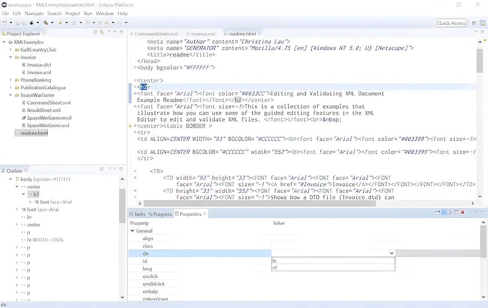
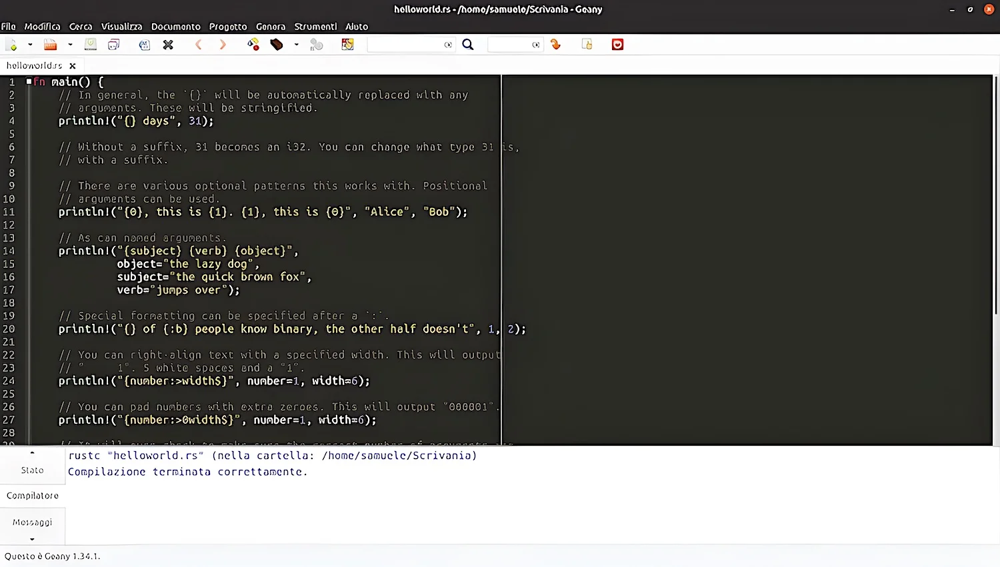

LOWERCASE TÖÖVAHENDID
Lowercase tööriistad üldisemalt öeldud on keskendunud tarkvara elutsükkli hilisematele etappidele, eriti üksikasjalikele projekteerimis-, kodeerimis-, testimis- ja hooldusfaasidele. Nad aitavad koodi genereerida, lähtekoodi hallata ja testimisprotsesse automatiseerida.
Peamiselt kasutatakse lowerCASE töövahendeid järgmisteks asjadeks:
Koodi genereerimine:
Lähtekoodi haldamine:
Töövahendid, mis genereerivad automaatselt koodi disaini spetsifikatsioonide või mudelite põhjal, vähendades käsitsi kodeerimise pingutusi.
Versioonikontrollimiseks, muudatuste jälgimiseks ja mitme arendaja koostöö arendamise toe jaoks. Silumine ja testimine: tööriistad, mis aitavad koodi silumist, üksuste testimist ja koodi kvaliteedi analüüsi.
Näited lowerCASE töövahenditest oleks Microsoft Visual Studio(terver konspekt on selle peal ehitatud), JetBrains IntelliJ IDEA ja Git.
Siin on paar näidet vahenditest, mida ma ei ole kasutanud:
-
Eclipse:
-
Geany:
Eclipse on IDE, mis toetab keskkonna kohandamiseks laiendatavat pistikprogrammi. Kuigi seda kasutatakse peamiselt Java-rakenduste arendamiseks, saab sellega kirjutada rakendusi ka teistes programmeerimiskeeltes (pistikprogrammide kaudu).
Geany on avatud lähtekoodiga kerge tekstiredaktor, mis on spetsiaalselt loodud lühikeste laadimisaegade ja piiratud sõltuvuste jaoks välistest teegidest või eraldi pakettidest.See toetab paljusid programmeerimis- ja märgistuskeeli, sealhulgas C, C#, C++, PHP, HTML, CSS, JavaScript, Python, Perl, Haskell ja Pascal. Toetatud on ka levinud failitüübid, nagu Diff-väljund, SQL ja ini-stiilis konfiguratsioonifailid.
